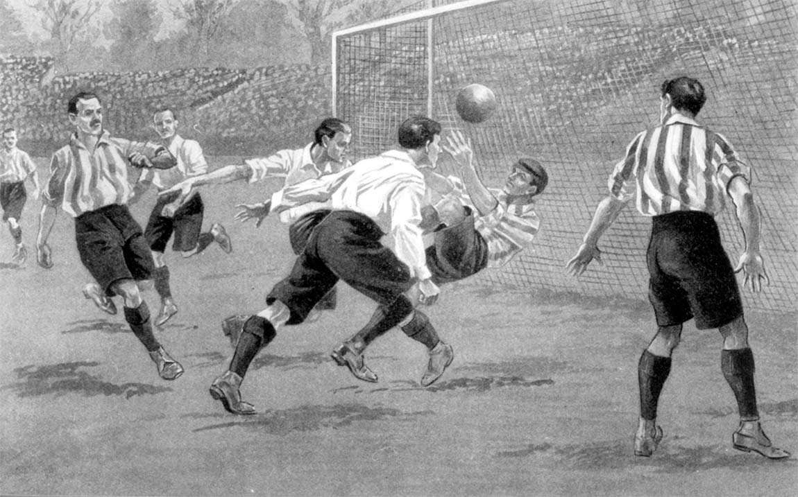
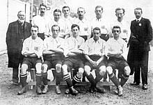
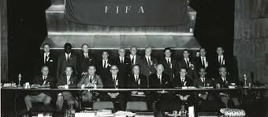
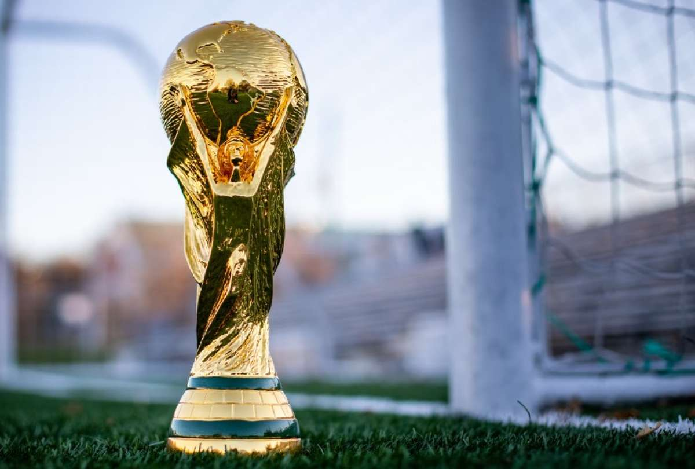
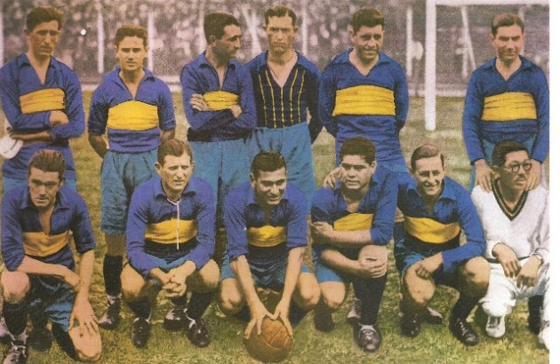
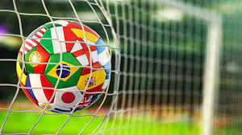

Orígenes del Fútbol
El fútbol tiene sus raíces en juegos antiguos que se practicaban en diferentes culturas, como el cuju en China y el harpastum en Roma.
Siglo XIX
El fútbol moderno comenzó a tomar forma en Inglaterra, donde se establecieron las primeras reglas y se fundaron los primeros clubes.
Fundación de la FIFA
En 1904, se fundó la FIFA (Federación Internacional de Fútbol Asociación) para unificar las reglas y organizar competiciones internacionales.
Primera Copa del Mundo
La primera Copa del Mundo se celebró en 1930 en Uruguay, donde el país anfitrión se coronó campeón.
Era Profesional
En la década de 1950, el fútbol se profesionalizó, aumentando la popularidad y el nivel de competencia en todo el mundo.
Fútbol Femenino

El fútbol femenino ha crecido exponencialmente desde la década de 1990, con la creación de la Copa del Mundo Femenina en 1991.
Impacto Global
Hoy en día, el fútbol es el deporte más popular del mundo, con millones de aficionados y una influencia cultural significativa.
Desarrollo Tecnológico
La tecnología ha cambiado la forma en que se juega y se ve el fútbol, con VAR y análisis de datos que mejoran el juego.
Futuro del Fútbol
El futuro del fútbol incluye un enfoque en la sostenibilidad, la inclusión y el uso de tecnología avanzada para mejorar la experiencia del juego.